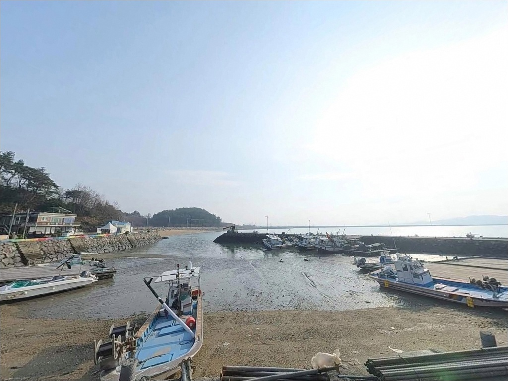
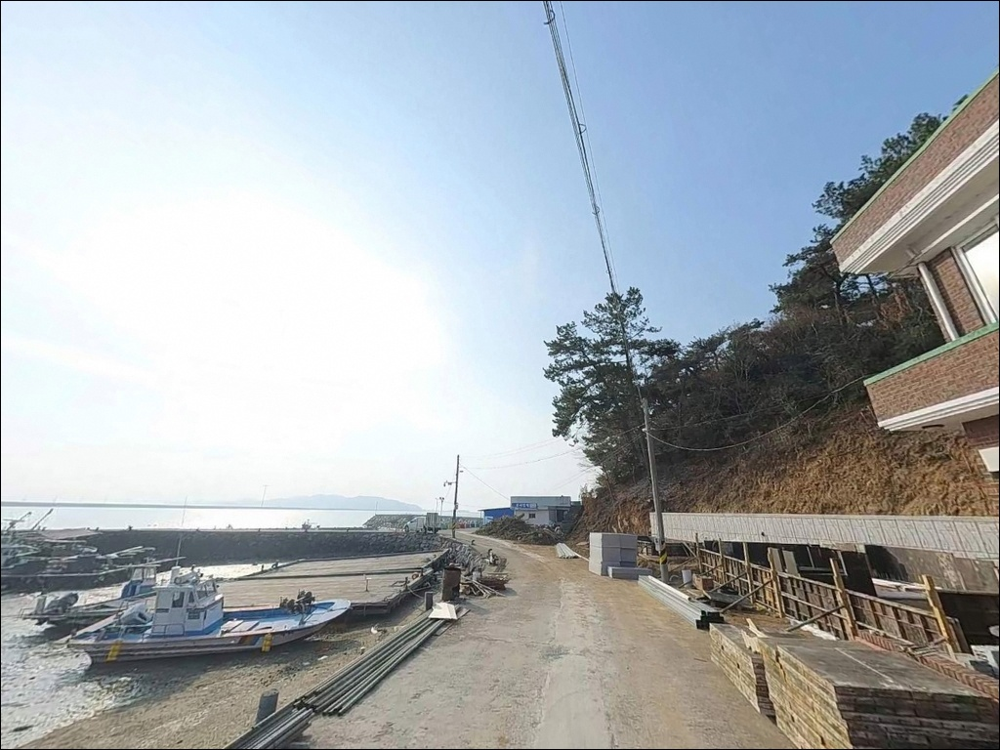
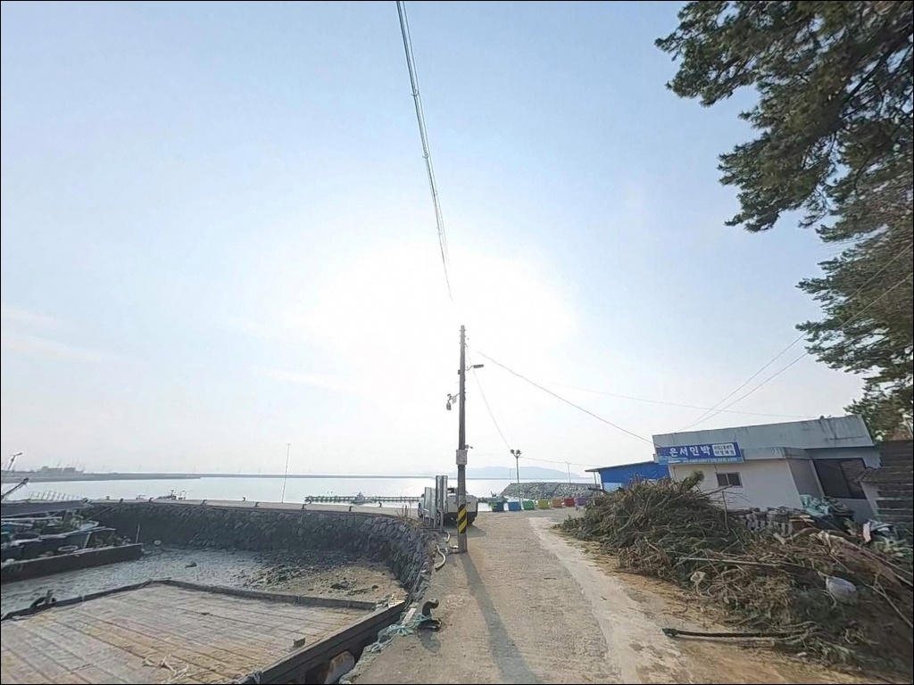
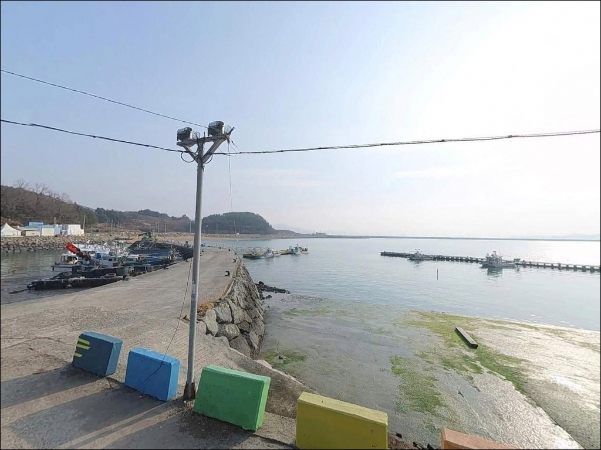
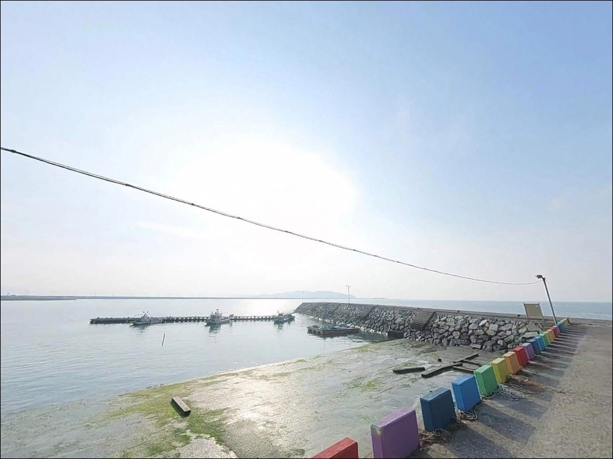
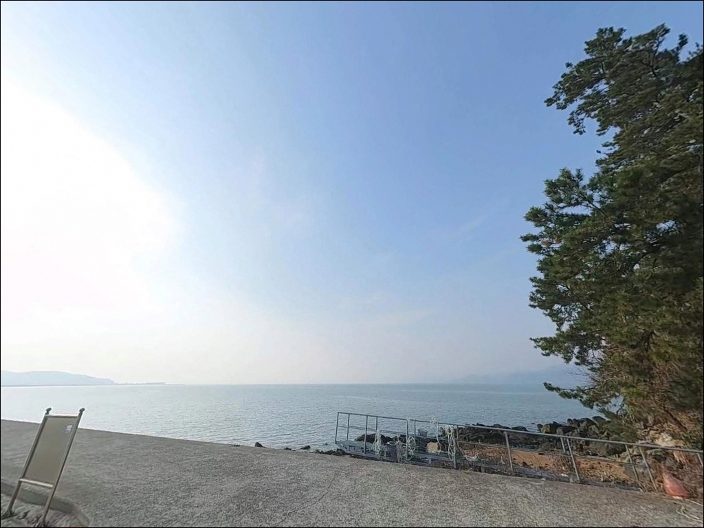
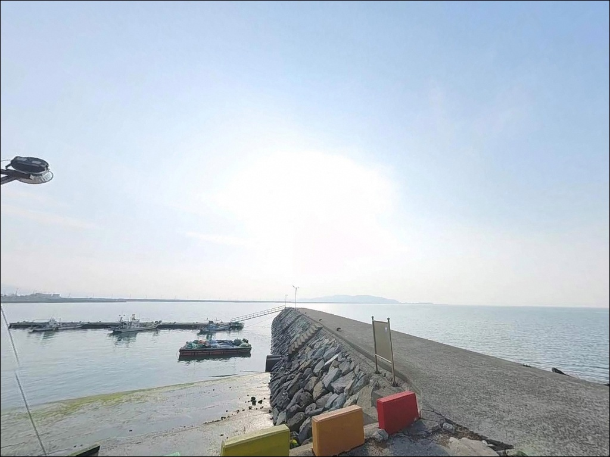
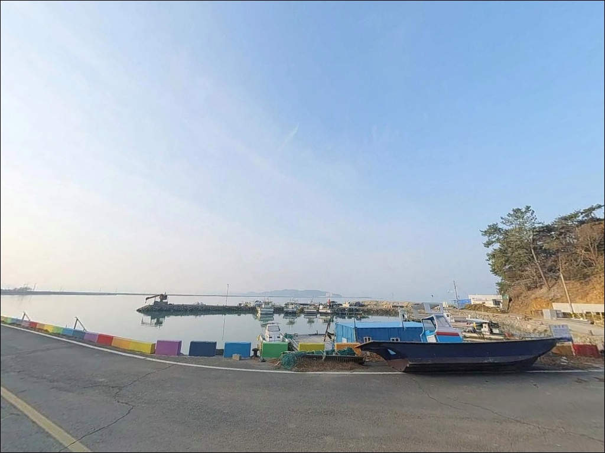

포인트 안내
풍류리선착장
전남 고흥군 두원면 풍류리 690-8
고흥만 내만 구조 선착장에서
가장 많이 하는 실수는
물때 확인 없이 도착하는 것입니다.
썰물이 진행 중인 상황에서는
수심이 빠르게 낮아져
채비를 던질 자리 자체가 사라집니다.
풍류리선착장은 고흥만방조제 초입 북쪽,
풍류해수욕장과 나란히 붙어 있는
소형 선착장입니다.
만 안쪽 내만 구조로 너울과 강풍의
직접 영향이 적은 편이며,
원투·릴찌·농어 루어를 함께 운용할 수 있는
복합 생활낚시 포인트입니다.
이 글은 풍류리선착장의
진입 환경, 차박 여건, 물때 판단 기준,
낚시 스타일별 공략 조건에 집중합니다.
조황 단정이나 특정 어종 보장은
이 글의 범위에 포함되지 않습니다.

1. 진입 동선과 차량 접근성
고흥읍에서 851번 지방도를 타고
두원면 방향으로 이동한 뒤,
830번 지방도와 연결되는 갈림길에서
고흥만 방조제 쪽으로 진입합니다.
선착장까지는 풍류리 마을 도로를
통과하는 방식이며,
1~1.5차선 폭의 포장 농어촌 도로가
선착장 입구까지 이어집니다.
일반 승용차 및 소형 SUV 기준으로
진입에 어려움은 없는 편입니다.
다만 대형 캠핑카나 트레일러 조합은
마을 안길 통과 구간에서
회차 여건이 좁아질 수 있으므로,
출발 전 위성지도로 진입로를
미리 확인해 두는 편이 좋습니다.
주차는 선착장 접속 도로 끝 공터와
풍류해수욕장 부지 인접 평지를
주요 후보로 활용합니다.
소형 선착장 구조 특성상
회차 공간이 넉넉하지 않으므로,
진입 전 차량 방향 전환 가능 여부를
미리 판단하고 들어가는 것이 기본입니다.

2. 차박 환경과 야간 체류 여건
풍류리선착장은 고립형 차박지가 아니라
마을 인접 조용형에 가깝습니다.
풍류해수욕장, 풍류어촌체험마을이
선착장과 도보 거리에 붙어 있는 구조여서
완전한 격리 감성보다는
마을 인근에서 조용히 하룻밤 머무는 방식에
어울리는 포인트입니다.
야간에는 차량 통행이 거의 없고
민가 밀집도도 낮은 편이라
프라이버시는 양호한 수준입니다.
가로등은 마을과 도로 구간에
제한적으로 설치되어 있어,
야간 낚시 시에는
헤드랜턴과 개인 조명 장비를 반드시
챙겨야 합니다.
내만 구조여서 외해 너울 영향은
거의 없는 편입니다.
다만 선착장 슬로프와 끝단은
썰물 시 펄 지형이 드러나면서
미끄럽기 때문에,
야간 이동 시에는 충분한 조명과
미끄럼 방지 신발이 기본 장비입니다.

3. 주변 편의시설 및 인프라 현황
풍류리선착장 반경 3km 이내에서
확정 가능한 편의점이나 주유소 정보는
없는 편입니다.
두원면 소재지까지 차량으로
15~20분 거리가 되어야
식당과 소규모 마트 이용이 가능합니다.
식수·얼음·낚시 소품·연료 모두
출발 전에 갖추고 진입하는 것이
현실적인 준비 방식입니다.
반경 6km 권역에 GS주유소가
확인되며, 약 10km권으로 이동하면
과역면 방면 편의점 이용이 가능합니다.
고흥읍내 대형마트와 병원은
차량 기준 20~30분 이내에 닿을 수 있어
비상 상황 대비 동선으로
미리 파악해 두는 편이 좋습니다.
풍류어촌체험마을이 선착장 인근에
조성되어 있습니다.
체험시설과 민박이 함께 운영되는 구조여서
비수기 방문 시에는 이용 가능 여부를
출발 전 확인하는 것이 좋습니다.

4. 이 포인트에서 물때가 낚시 성패를 가르는 이유
풍류리선착장은 고흥만 내만 깊숙이
자리한 구조여서
수심이 평균해면 기준
0.8~1.6m로 매우 얕습니다.
썰물이 진행되면 내항 쪽 바닥이
빠르게 드러나고,
어종 자체도 연안에서 빠져나가는
패턴을 보입니다.
반대로 들물이 시작되면
어군이 연안 가까이 붙어오는 흐름이
형성되므로,
들물 전후 2~3시간이 이 포인트의
핵심 낚시 시간입니다.
고흥만 일대 기준으로
조류 유속은 창조류 기준 1.8노트 수준으로,
내만이지만 예상보다 빠른 편입니다.
사리 전후에는 조류가 살아나면서
조황 기대치가 높아지는 구조입니다.
바다타임에서 풍류리 기준 물때를 확인하고
들물 시작 시각에 맞춰
출발 시각을 역산하는 것이
가장 기본적인 준비 방법입니다.
출조 전 최신 조황은 "고흥만방조제 조황"이나
"풍류리 낚시" 키워드로 반드시 검색해
확인하시기 바랍니다.

5. 지형 기반 낚시 여건 분석
풍류리선착장은 고흥만방조제에서
약 928m 떨어진 위치에 자리하며,
방조제 수문 구간에서 흘러오는 조류가
선착장 앞 해역에 영향을 미치는 구조입니다.
바닥 저질은 펄 위주이며,
선착장 끝단 방향으로 수심이 집중되는
형태입니다.
선착장 주변에 테트라포드는 없고
콘크리트 슬로프와 끝단이
주요 발판 구조를 이룹니다.
갯바위가 아닌 콘크리트 마감 구조이므로
발판은 상대적으로 안정적인 편이나,
썰물 시 슬로프 구간에 펄이 묻으면
미끄러움에 주의해야 합니다.
내만형이라 외해 파도 영향은 적지만,
조류 방향에 따라
선착장 끝단과 내측 사이의
어군 분포가 달라집니다.
들물 시에는 어군이 선착장 방향으로 밀려오고,
이 타이밍에 집중 공략하는 방식이
이 지형 구조에 가장 잘 맞습니다.


6. 풍류리선착장에 어울리는 낚시 스타일
이 포인트에서 가장 기본이 되는 방식은
원투낚시입니다.
펄 저질 바닥에 참갯지렁이나
홍갯지렁이를 미끼로 달고
선착장 끝단에서 멀리 투척하는 방식이며,
들물 시 도다리와 붕장어가
주요 기대 어종입니다.
조류 유속에 맞춰 봉돌을
30~50호 범위에서 조정하는 것이
채비 안정의 기본입니다.
릴찌낚시와 민장대 낚시도
이 포인트 구조에 잘 맞습니다.
선착장 끝단에서 조류 흐름 방향으로
찌를 흘리면서 감성돔과 숭어를 노릴 수 있고,
학꽁치 시즌에는 지역 주민들이
민장대 하나로 자주 찾는 포인트이기도 합니다.
숭어는 훌치기채비 병행도 유효한 구조입니다.
농어 루어낚시도 이 해역에서
시도해볼 만한 스타일입니다.
그럽웜이나 지그헤드 채비를 활용해
들물 흐름을 타고 붙어오는 농어를
노리는 방식이며,
봄부터 가을까지 기대해볼 수 있는
패턴입니다.

7. 대안 포인트 및 플랜 B 동선
풍류리선착장 조건이 여의치 않을 때
첫 번째로 이동할 곳은
고흥만방조제입니다.
선착장에서 약 928m 거리로,
걸어서 이동이 가능한 수준입니다.
방조제 길이는 약 2.9km에 달하며,
제방 전역에서 원투·릴찌·루어 모두
운용이 가능합니다.
방조제 남측 끝에 위치한
금호선착장도 같은 해역 조건을
공유하는 대안 포인트입니다.
접안 시설과 주차 공간이
풍류리선착장보다 넓은 편이어서,
공간 여유가 필요한 경우
금호선착장을 플랜B 거점으로
설정하는 것이 효율적입니다.
차박 거점을 바꿔야 할 경우에는
대전해수욕장 인근 주차 부지가
약 7.8km 거리에 있습니다.
규모가 있는 대체 거점으로,
비수기에는 차량 체류 여건이
풍류리 선착장보다
넉넉한 편입니다.

물때만 맞추면 조용하게
공략할 수 있는 포인트입니다
원투낚시나 릴찌낚시를 즐기는 낚시인이라면
풍류리선착장의 내만 펄 지형 구조는
들물 타이밍에 기대를 걸어볼 만한
여건을 갖추고 있습니다.
복잡한 갯바위 이동 없이
선착장 끝단 한 자리에서
원투·릴찌·루어를 교차 운용할 수 있어,
짐을 가볍게 꾸리는 스타일에도 잘 맞습니다.
반면 편의시설에 의존하거나
물때와 무관하게 오랜 시간
낚시 자리를 유지하고 싶은 경우에는
고흥만방조제를 기점으로 삼는 것이
현실적인 선택입니다.
물때 확인, 자급 준비, 진입로 사전 점검,
이 세 가지를 갖추고 간다면
고흥만 내만의 조용한 하루 출조로
기억에 남을 만한 포인트입니다.
풍류해수욕장 쪽 부지를 차박 거점으로
함께 활용하면,
낚시와 하룻밤 체류를 무리 없이
엮어 즐길 수 있는 곳입니다.